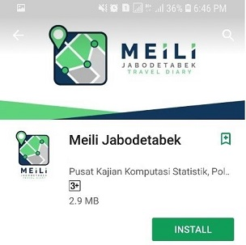
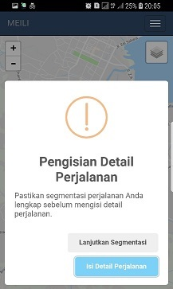

Pemasangan Aplikasi
-
Bagaimana saya memasang aplikasi?
1. Buka PlayStore untuk Anda yang menggunakan sistem operasi Android atau AppStore untuk Anda yang menggunakan sistem operasi iOS
2. Cari aplikasi “MEILI Jabodetabek”
Untuk versi iOS, tampilan seperti di bawah ini,
3. Kemudian tekan “Install” untuk memasang

4. Tunggu beberapa saat sampai proses unduh dan pemasangan selesai.
5. Untuk membuka aplikasi dari daftar aplikasi, tekan pada aplikasi “MEILI Jabodetabek“ di Android (sebelah kiri) dan di iOS (sebelah kanan).
6. Pada saat dibuka, aplikasi akan meminta Anda untuk memberikan beberapa akses diantaranya akses untuk lokasi dari perangkat. Untuk mengizinkan, centang “Jangan tanya lagi” dan tekan “Izinkan” untuk Android (sebelah kiri) dan “Always Allow” untuk iOS (sebelah kanan).
7. Setelah aplikasi terbuka, Anda akan langsung diarahkan ke jendela login.
8. Jika Anda belum memiliki akun, silakan buat baru dengan tekan “Mendaftar sebagai user baru”.
9. Kemudian isikan username dengan alamat email, password, ketik ulang password dan nomor telepon. Kemudian tekan “Daftar dan Masuk”.
10. Namun jika Anda sudah memiliki akun, silakan masukkan username dan password di kolom yang tersedia dan tekan “Masuk”.
11. Jika Anda berhasil masuk ke aplikasi, maka akan muncul layar beranda Anda.
12. Selain itu, akan ada indikator di pemberitahuan bahwa aplikasi MEILI Jabodetabek sedang berjalan.
13. Untuk melakukan kelola data perjalanan, tekan kelola data perjalalanan,
14. Setelah itu, maka aplikasi akan menampilkan peta yang menunjukkan perjalanan Anda pada waktu tertentu.
15. Di aplikasi akan ada beberapa tombol menu yaitu Menu, Perbesar/perkecil skala peta, Layer peta, Segarkan peta, Perjalanan sebelumnya, Perjalanan selanjutnya, Anotasi, Keterangan perjalanan, Perjalanan Anda
16. Untuk menampilkan menu, tekan tombol menu (a).
Anotasi Perjalanan
-
Bagaimana saya melakukan anotasi?
17. Untuk melakukan kelola data perjalanan, tekan kelola data perjalalanan,
18. Setelah itu, maka aplikasi akan menampilkan peta yang menunjukkan perjalanan Anda pada waktu tertentu.

19. Buka perjalanan yang akan dilakukan anotasi, untuk melihat perjalanan lain, tekan atau
20. Kemudian tekan menu, kemudian tekan anotasi.
21. Kemudian klik tombol anotasi

22. Kemudian akan muncul kotak pesan apakah ingin melanjutkan segmentasi atau ingin mengisi detail perjalanan. Jika perjalanan sudah benar, maka tekan “Isi detail perjalanan”, tetapi jika Anda masih ingin mengubah perjalanan, tekan “lanjutkan segmentasi”

23. Jika Anda akan mengubah perjalanan atau melakukan segmentasi, pilih titik di mana Anda melakukan pergantian moda transportasi, kemudian aplikasi akan menampilkan pilihan menu, apakah titik tersebut adalah titik transisi di mana Anda berganti moda transportasi atau titik berhenti di mana Anda sampai tempat tujuan.
24. Jika Anda menandai sebagai titik transisi, maka di titik tersebut akan ditambahkan gambar (a) Jika Anda menandai sebagai titik berhenti, maka di titik tersebut akan ditambahkan gambar
25. Jika Anda memilih mengisi detail perjalanan, maka aplikasi akan menampilkan kolom-kolom yang harus Anda isi atau pilih tentang perjalanan Anda di setiap titik mulai, transisi dan selesai.
26. Jika titik tersebut adalah titik transisi, silakan pilih moda transportasi yang digunakan, tipe dan informasi lain terkait moda tersebut. Misalkan pada gambar berikut Anda memilih moda transportasi Mobil dan tipenya adalah mobil pribadi-penumpang.
27. Jika titik tersebut adalah titik berhenti, isikan lokasi tujuan yang tersedia (a), atau memilih lokasi baru dengan tambah lokasi baru dengan cari lokasi (b1) kemudian beri nama lokasi (b2) sebagai keterangan
28. Setelah itu pilih aktivitas yang Anda lakukan di titik tujuan. Anda bisa memilih satu sampai dengan tiga aktivitas.
29. Setelah itu tekan “simpan”.
30. Setelah itu aplikasi akan menanyakan apakah Anda ingin melajutkan anotasi ke perjalanan selanjutnya atau tidak.
31. Anda juga dapat melapokan masalah yang ada di aplikasi dengan mencentang “tambahkan laporan pada perjalanan ini”. Kemudian aplikasi akan menampilkan kolom tambahan untuk dapat anda pilih kategori laporannya dan detail kesalahan yang ada.
32. Jika melanjutkan, tekan “Lanjutkan”, Untuk tidak, tekan “Cancel”.

Perubahan Titik Tujuan
-
Bagaimana saya melakukan perubahan titik tujuan?
33. Untuk melakukan kelola data perjalanan, tekan kelola data perjalalanan,
34. Setelah itu, maka aplikasi akan menampilkan peta yang menunjukkan perjalanan Anda pada waktu tertentu.
35. Buka perjalanan yang akan dilakukan anotasi, untuk melihat perjalanan lain, tekan atau

36. Kemudian tekan menu, kemudian tekan anotasi.
37. Pilih titik tujuan, dengan menekan titik yang ingin Anda pilih sebagai titik tujuan.
38. Kemudian tandai titik sebagai titik berhenti, kemudian simpan.
39. Kemudian lakukan anotasi seperti langkah 28-39
Penggabungan Perjalanan
-
Bagaimana saya melakukan penggabungan perjalanan?
40. Untuk melakukan kelola data perjalanan, tekan kelola data perjalalanan,
41. Setelah itu, maka aplikasi akan menampilkan peta yang menunjukkan perjalanan Anda pada waktu tertentu.
42. Buka perjalanan yang akan dilakukan penggabungan, untuk melihat perjalanan lain, tekanatau
43. Pilih dua perjalanan yang ingin digabungkan, pada contoh gambar, perjalanan yang akan digabungkan adalah perjalanan ke-89 dan perjalanan ke-90.
44. Kemudian pindah ke tampilan peta perjalanan sebelumnya
45. Kemudian tekan menu, kemudian tekan anotasi.
46. Kemudian klik tombol anotasi
47. Kemudian pada tampilan anotasi, geser layar ke bagian paling bawah sampai ke segment titik tujuan, kemudian cari tombol “gabungkan dengan perjalanan selanjutnya”
48. Kemudian pada konfirmasi penggabungan tekan “Ya”.
49. Jika berhasil, maka akan ada pesan bahwa penggabungan berhasil.
50. Jika berhasil, peta perajalann akan menyatu
51. Kemudian lakukan anotasi seperti langkah 28-39
JUTPI 2
-
Apakah JUTPI 2?
Jabodetabek Urban Transportation Policy Integration (JUTPI) Phase 2 adalah program kerja sama antara Kementerian Koordinator Bidang Perekonomian dan pemerintah Jepang dengan JICA (Japan International Cooperation Agency) yang disahkan/disetujui bersama dalam dokumen Record of Discussion on Jabodetabek Urban Transportation Policy Integration Project Phase 2 antara JICA Indonesia bersama dengan Kementerian Koordinator Bidang Perekonomian, Badan Perencanaan Pembangunan Nasional (BAPPENAS) dan Badan Pengelola Transportasi Jabodetabek (BPTJ). Tujuan dari proyek ini adalah untuk mengembangkan dan meningkatkan fungsi institusi-institusi administratif dengan mendorong pengembangan kapasitas dan kerja sama antar organisasi yang terlibat dalam pelaksanaan sistem transportasi perkotaan khususnya di kawasan JABODETABEK untuk berkontribusi pada pembangunan sistem transportasi umum di perkotaan.
-
Aktifitas 1
Output Aktifitas : untuk mengembangkan suatu kerangka lintas kementerian dan dearah untuk mempromosikan kebijakan transportasi perkotaan yang terintegrasi di JABODETABEK. Rincian Aktifitas : Memperbarui (atau memerinci) Rencana Induk Transportasi Jabodetabek (RITJ). Mendorong implementasi dari Rencana Induk Transportasi Jabodetabek (RITJ). Pelaksanaan Pemantauan Kemajuan Pelaksanaan Rencana Induk Transportasi Jabodetabek (RITJ) dan Pembuatan Laporan Pemantauan dan Evaluasi Tahunan. Pengembangan Sistem Pemeliharaan dan Peningkatan Database Transportasi Perkotaan Jabodetabek Perumusan dan Peningkatan Sistem Pengambilan Keputusan Lintas Daerah di Jabodetabek. Mengusulkan Ukuran Pencapaian Pelaksanaan Tujuan Rencana Induk Transportasi Jabodetabek (RITJ).
-
Aktifitas 2
Output Aktifitas : untuk meningkatkan kapasitas lembaga yang terkait dengan transportasi perkotaan untuk melaksanakan proyek transportasi di JABODETABEK melalui pelaksanaan proyek-proyek percontohan. Rincian Aktifitas : Menganalisis kebijakan terkait transportasi perkotaan dari instansi terkait di Jabodetabek. Menetapkan dan memperbarui mekanisme pelaksanaan proyek percontohan termasuk metode seleksi, dukungan dan evaluasi dengan mengacu pada kebijakan transportasi perkotaan yang relevan dari instansi terkait di Jabodetabek. Untuk melaksanakan proyek percontohan. Mengevaluasi hasil proyek percontohan. Mengembangkan rekomendasi yang mengandung lesson learnt dari hasil pelaksanaan proyek percontohan. Download Material : Aktifitas 2
-
Aktifitas 3
Output Aktifitas : untuk meningkatkan kapasitas lembaga yang terkait dengan transportasi perkotaan untuk melaksanakan proyek TOD di JABODETABEK. Rincian Aktifitas : Menganalisis kebijakan TOD dari instansi terkait di Jabodetabek. Meninjau ulang peraturan-peraturan TOD yang sudah ada di Jabodetabek dan menyiapkan modifikasi yang diperlukan. Mengidentifikasi demarkasi di antara kementerian/lembaga terkait dan mendukung koordinasi yang diperlukan oleh Kemenko untuk pelaksanaan proyek TOD. Menyiapkan dan memerbarui rencana pelaksanaan proyek model TOD. Untuk memperkuat kapasitas pengembangan kelembagaan untuk melaksanakan proyek model TOD. Melakukan (beberapa tahap) pelaksanaan proyek model TOD. Untuk mengevaluasi hasil subproyek model TOD. Mengembangkan pelajaran dan rekomendasi dari hasil proyek model TOD.